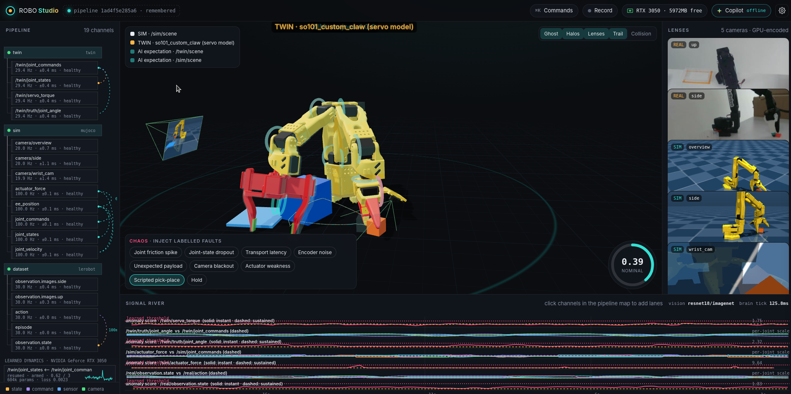

ROBO Studio
Build in simulation. Ship to your robot.
ROBO Studio is the robotics software I build and sell. It lets engineers create and test custom workflows before deploying to physical hardware. It’s also the workspace I use to develop, test, and ship my own physical AI.


CAD to simulation
Drag and drop CAD into a URDF workflow with automatic joint linkage definition. Spend less time preparing models and more time building.
Connect the physical world
Map real-time camera footage directly into simulation, with advanced simulation data to inspect how your system behaves.
Test before deployment
Build and test custom robotics workflows before shipping them to hardware, using the same software I use on my own robots.